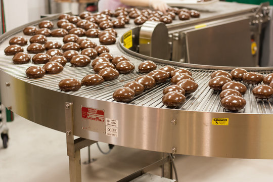
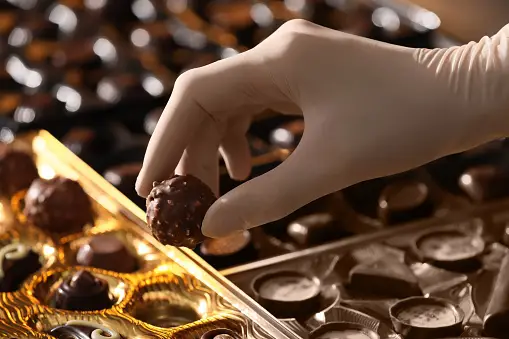

Visit A Chocolate Factory
One of the most funny trips to us is visit chocolate factory because we all love chocolate. When we saw an advertisement on tv about chocolate we hope to be there and watch how to make the chocolate. I and my family decided to visit chocolate factory because we curious about it. We tried to search about factory to visit. We chose specifically Nutella factory to visit it Because it allow visitor to came and showed them how to make their delicious chocolate. They made special section to visitor in order to let them enjoyed their trip. We made a list for what we want to learn about the factory because we want to invest every second there. Although I don't like factories, but really I was so excited to go to the factory.
When we arrived to the factory, there was chocolate specialist waiting for us. Then, we entered to the factory, and they give us the instruction of the trip. They told us of thing we couldn’t do it like touching the machine, and walking in dangerous areas. After that, we started by showing the material such as milk, sugar, and cacao powder. Later, we continued to the most exciting step which is the mixing the material in the machine. Finally, we arrived to the final station where we found the factory product like chocolate milk, chocolate bar, and a lot of other product.
In conclusion, it was so funny trip, and we learn a lot of thing from it, so I suggested everyone to try this experience. Because we enjoyed in our trip, we decided to visit other factories.
CONTACT
+91 9654345678 | chocolatefactory@gmail.com
6th street avenue park,Trichy,625620